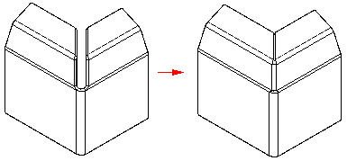
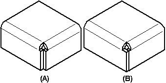
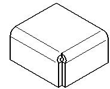
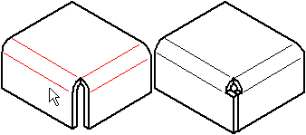
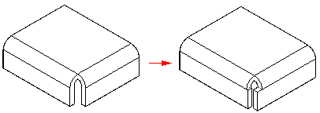

Closing corners
The Close 2–Bend Corner command modifies two flanges in one operation to close a corner where two flanges meet.

The Close 3-Bend Corner command closes corners that contain three bends.

A closed corner is a treatment feature. You do not have to draw a profile, just select the edges you want to modify. With 2-bend corners, you can specify whether to close the corner (A), or overlap the corner (B).

The Overlap option is not available for 3-bend corners.
When you close the corner, you can also specify what type of bend treatment you want. For example, you can specify that you want a circular cutout applied to the bent faces.

When you overlap a corner, select the bend to be overlapped.

In the ordered environment, when you overlap a corner, you can use the Overlap Ratio option to compute the overlap as a percentage of the global material thickness.

It is best to apply bend and corner relief before using the Close 2–Bends Corner command, so there is a clean corner to close. The corner should be symmetric, with equal bend radii and bend angles on the adjacent flanges. If there is more than one way to close the corner, edit the flanges themselves to close the corner the way you want.